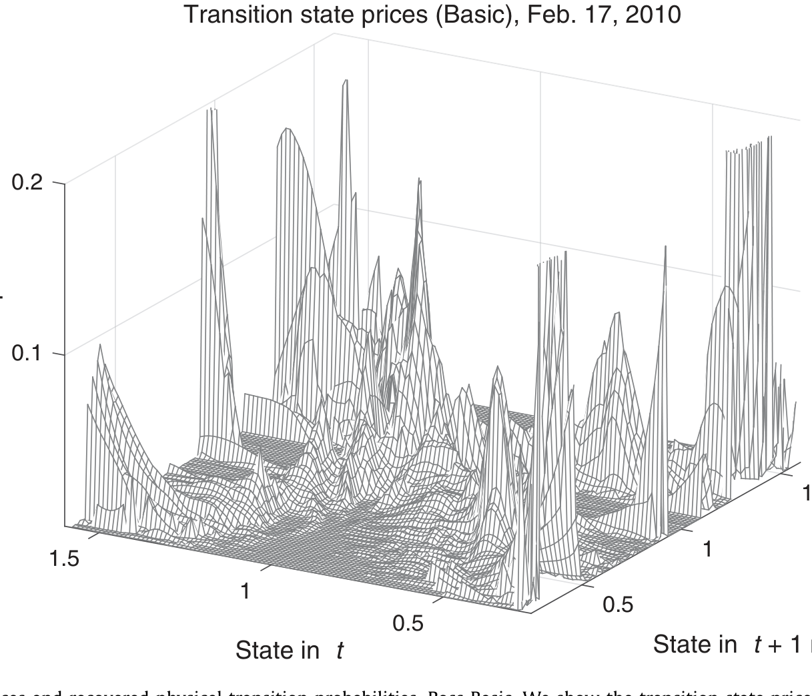
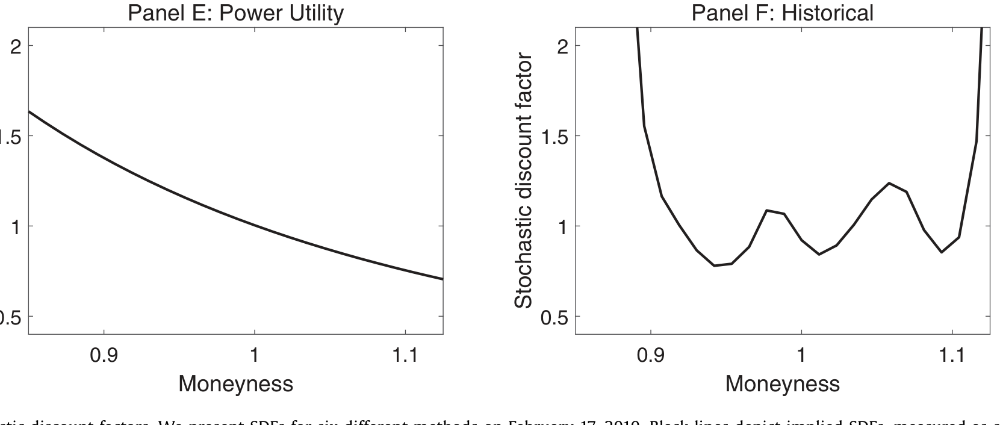
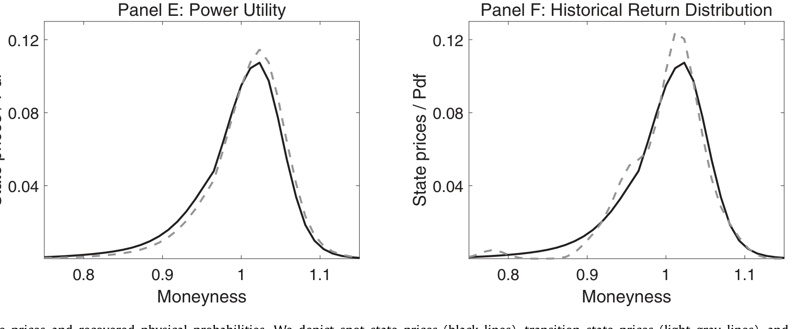
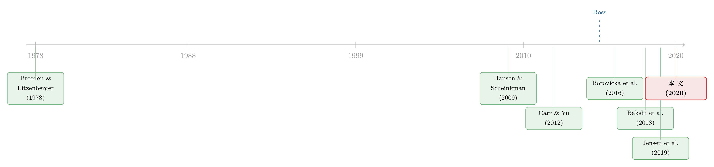

把概率从期权价格里「凭空」捞出来——Ross 复原定理的一次实证审判
本文读的是 Jackwerth & Menner (2020, Journal of Financial Economics)：他们用 1986–2017 年最长的一段 S&P 500 期权数据，逐一实现并检验了 Ross (2015) 复原定理的多个版本，结论很硬——复原出来的「真实概率」既与未来收益不相容，也预测不了未来收益和已实现方差；越加经济约束，拒绝得越彻底。反倒是两个最朴素的基准（幂效用、历史分布）怎么都拒绝不掉。
1 一个太漂亮、以至于让人不敢相信的承诺
金融经济学里有一个反复出现的三角关系。任何一个未来状态的状态价格 (state price) \(\pi\)，都可以拆成两块：市场对那个状态发生概率的看法，也就是真实概率 (physical probability) \(p\)；以及市场为「在那个状态里多拿一块钱」愿意付的代价，也就是随机贴现因子 (stochastic discount factor, SDF) \(m\)。三者的关系简单得近乎朴素：
$$p = \frac{\pi}{m}.$$
这就是论文开篇的式 (1)。它的麻烦在于：状态价格 \(\pi\) 我们能从期权价格里直接读出来（这是 Breeden 和 Litzenberger 早在 1978 年就教会我们的事），但 \(p\) 和 \(m\) 是两个未知数，一个方程解不出两个数。所以几十年来，做实证的人只能「三取二」——先假设一个 SDF（比如假设代表性投资者是幂效用的），再去倒推真实概率；或者反过来，先用历史数据估真实概率，再倒推 SDF。无论哪条路，都得先外生地塞进一个假设。
接着，一个自然的问题是：有没有可能,只用市场价格本身，把 \(p\) 和 \(m\) 同时解出来，一个外生假设都不借？
这听起来像是想从一个方程里解出两个未知数的痴心妄想。可 Ross (2015) 的复原定理 (recovery theorem) 偏偏说：在足够强的假设下，光凭状态价格就够了。这个承诺太漂亮了——它意味着期权价格里其实「藏着」市场对未来的真实看法，我们一直没把它捞出来，只是因为方法不对。
复原定理一出，立刻点燃了一条小而热闹的文献。但漂亮的理论需要数据来兑现。本文做的，正是把这张「空头支票」拿到 S&P 500 的真实期权数据上去兑现——看它到底能不能取出钱来。
（关于「能从期权价格里读出多少关于未来的信息」这个母题，本博客另有一篇可对照阅读：《把未来的概率从期权价格里「读」出来：一个被忽略的无套利约束》。）
2 魔术是怎么变的：复原定理的三个假设与那个特征值
要理解后面为什么会失败，得先看清这个「魔术」到底靠什么变出来的。Ross 用了三个明确的假设，每一个都不轻。
假设一：时间齐性的转移状态价格 (time-homogeneous transition state prices)。 记 \(\pi_{i,j}\) 为「今天处在状态 \(i\)、一期后到达状态 \(j\)」的状态价格。Ross 要求它只依赖于状态对 \((i,j)\)，与日历时间无关。注意，我们能从期权里直接观察的，只是从当前状态 \(i=0\) 出发的那一行 \(\pi_{0,j}\)（即通常的即期状态价格 (spot state prices)）；而定理需要的，是整张 \(\pi_{i,j}\) 矩阵——包括那些从「假想的、我们现在并不身处其中」的状态出发的转移价格。这一点是后面所有麻烦的根源。
假设二：所有转移状态价格严格为正。 这个相对温和，可以靠约束强行满足。
假设三：SDF 是转移无关的 (transition-independent)。 这是最强、也最致命的一条。它要求 SDF 能写成
$$m_{i,j} = \delta\,\frac{u'_j}{u'_i},$$
其中 \(\delta\) 是一个正常数，\(u'_i\)、\(u'_j\) 是只依赖于「所处状态」的正值。Ross 把 \(u'\) 解释成边际效用、\(\delta\) 解释成效用贴现因子——但请记住，这只是一个函数形式上的限制，它强行规定了 SDF 必须长成「终点值除以起点值」的样子。
把这三条拼起来，魔术就成立了。代入式 (1)，真实转移概率变成
$$\sum_{j}\pi_{i,j}\,\frac{1}{u'_j} \;=\; \delta\,\frac{1}{u'_i}\qquad \forall\, i.$$
这正是论文的式 (4)。令 \(z_i = 1/u'_i\)，把所有转移状态价格收进一个 \(N\times N\) 矩阵 \(\Pi\)，上式立刻化成一个干净利落的特征值问题 (eigenvalue problem)：
这一步是整个定理的引擎。由 Perron-Frobenius 定理可知，\(\Pi\) 只有唯一一个分量全为正的特征向量 \(z\)，它对应最大的正特征值 \(\delta\)。于是 \(z\) 一确定，SDF \(m_{i,j}=\delta\,z_i/z_j\) 就定了，真实概率 \(p_{i,j}=\pi_{i,j}\,z_j/(\delta z_i)\) 也定了——而且解唯一。两个未知数，真的被一个方程解了出来。
但魔术的代价藏在 \(\Pi\) 里。可观测的只有它的第 0 行；其余 \(N-1\) 行都得从「不同到期日的即期状态价格如何彼此衔接」里反解出来。整篇论文的实证悲剧，几乎全部源于这件事：\(\Pi\) 根本没被期权价格很好地识别出来。
3 识别策略：四个 Ross、两个基准，和一把密度尺
本文真正的贡献，不在理论，而在它把这套魔术老老实实地搬到数据上，看每一步在哪里崩掉。作者的做法是：从同一组即期状态价格出发，构造出六种复原方法，再用一组密度检验 (density tests) 去问同一个问题——「未来的收益，真的像是从复原出来的那个分布里抽出来的吗？」
怎么得到 \(\Pi\) 的其余各行。 关键的衔接关系是：不同到期日的即期状态价格之间，被转移矩阵串在一起。以 Ross Basic 为例，用十分之一个月为步长、一次转移为一个月（十步），
$$\pi^{\,t+10}_{0,j} \;=\; \sum_{h\in I}\pi^{\,t}_{0,h}\,\pi_{h,j}\qquad \forall\, j\in I,\; t=0,\dots,110.$$
这里 \(\pi^{t}_{0,j}\) 是到期 \(t\) 的即期状态价格。把 110 个重叠转移叠起来，就有了 \(N=111\) 个状态的约束。然后在非负约束下，解一个惩罚式 (8) 偏离的最小二乘问题来反解 \(\Pi\)。这是「首先」。
接着，一个自然的问题是：这样反解出来的 \(\Pi\) 长什么样？ 答案很难看。短期限的期权价格对那些「离当前状态很远」的转移价格几乎不敏感，于是优化器可以随便往这些无关格子里塞数值而几乎不影响拟合——结果就是远离主对角线的地方冒出一堆本不该有的高值，转移矩阵呈现多峰 (multimodal)、极不稳定的形态。其直接后果是：某些行的行和远大于 1，对应出离谱的状态依赖无风险利率。就在 2010 年 2 月 17 日这一个普通的样本日，三分之一的一个月状态依赖无风险利率低于 \(-20\%\)（最低 \(-98\%\)），另有三分之一高于 \(80\%\)（最高竟达 \(576\%\)）。

Figure 1: Transition state prices and recovered physical transition probabilities, Ross Basic. We show the transition state prices as identified by th
于是，作者「然后」加上经济约束，想把这个怪物驯服。 Ross Bounded 把每一行的行和限制在 $[0.9, 1.0]$（等价于把月度无风险利率压到 \(0\%\)–\(11.11\%\)，年化 \(0\%\)–\(254.07\%\)）；Ross Unimodal 在此之上再要求每一行单峰、峰值落在主对角线上。约束确实消掉了那些荒唐的远端高值——可副作用是，转移概率被几乎均匀地压平，反而失掉了「越近的状态越可能到达」这个经济上本该有的对角结构。
但真正关键的一步，是绕开 \(\Pi\)。 既然 \(\Pi\) 的非对角各行根本估不准，能不能干脆别估？作者注意到：当前状态那一行 \(\pi_{0,j}\) 本来就是可观测的即期状态价格。把特征值方程两边反复左乘 \(\Pi\)，
$$\Pi^{t} z = \delta^{t} z,\qquad t = 1,\dots,T,$$
而 \(\Pi^t\) 的第 0 行恰好是「\(t\) 期的即期状态价格」——这同样可以从期权直接读出来！于是整套识别坍缩成一组只用即期状态价格的方程：
$$\sum_{j\in I}\pi^{\,t}_{0,j}\,\frac{z_j}{z_0} \;=\; \delta^{t},\qquad t = 1,\dots,T.$$
这就是 Ross Stable，一个不需要显式估计转移状态价格的版本。（Jensen, Lando & Pedersen 在与本文平行的独立工作里给出了同一思路，但给 SDF 加了更多结构。）
最后，两个「不靠 Ross」的基准。 一个是 Power Utility：假设代表性投资者幂效用、风险厌恶系数 \(\gamma=3\)，用它把即期状态价格转成真实概率；另一个更朴素，Historical Return Distribution——直接用过去五年 60 个月的 S&P 500 月收益经验分布，每个点概率 $1/60$。这两个基准就是用来当「照妖镜」的。
数据与检验。 期权数据来自 Berkeley Options Database（1986 年 4 月–1995 年 12 月）与 OptionMetrics（1996 年 1 月–2017 年 12 月），共 380 个月度样本日，是文献里最长的一段 S&P 500 期权样本。检验工具是四把密度尺：Berkowitz (2001) 检验、Knüppel (2015) 均匀性检验的两个版本，以及 Kolmogorov-Smirnov 检验。核心的假设检验是：把每个样本日复原出的当前分布 \(p_{0,j}\) 当作预测分布，看后来真实发生的收益落点是否服从它。
4 主要结果：复原出来的「真实概率」，根本不真实
把六种方法跑过 380 个月，结论一边倒。
第一，密度检验强烈拒绝 Ross 复原。 无论 Ross Original、Basic、Bounded 还是 Unimodal，复原出的当前分布都被检验拒绝——未来 S&P 500 收益看上去不像是从这些分布里抽出来的。Ross Stable 这个绕开 \(\Pi\) 的版本也救不了场。反观两个基准，Power Utility 和 Historical Return Distribution，都拒绝不掉。一个号称「无需假设」的精巧定理，输给了「拍脑袋假设一个幂效用」和「干脆用历史数据」这两个最懒的办法。
第二，复原的均值和方差预测不了任何东西。 作者进一步用复原分布的均值去预测未来收益、用方差去预测未来已实现方差——Ross 系方法都谈不上有预测力。
第三，复原出的 SDF 形状是错的。 风险厌恶意味着 SDF 应当大致向下倾斜（坏状态里一块钱更值钱）。可 Ross 复原给出的 SDF 不仅不单调下行，反而布满了局部极小与极大，像被揉皱的纸。加了经济约束之后，SDF 又被压成几乎水平的一条线——同样不符合效用理论。

Figure 5: Stochastic discount factors. We present SDFs for six different methods on February 17, 2010. Black lines depict implied SDFs, measured as sp
如图所示，把六种方法在同一天（2010 年 2 月 17 日）的 SDF 摆在一起，Ross 系方法（尤其是无约束的）那种忽上忽下的锯齿形态，和幂效用基准那条光滑下行的曲线形成刺眼对比。SDF 是被 \(\Pi\) 的结构「绑架」的，而 \(\Pi\) 本身又没被期权价格识别好——错误就这样一层层传导下来。
第四，一个意味深长的「假阳性」。 作者把机器学习（交叉验证的弹性网正则化，elastic net）也用到复原上，结果反而拒绝不掉 Ross 复原了。但这恰恰暴露了问题的本质：弹性网会机械地把 SDF 逼成 U 形，让拒绝变难；同时复原出的概率噪声极大，而噪声大本身就会让统计检验更难拒绝。一旦把合理的经济约束加回去，又立刻回到强烈拒绝。「拒绝不掉」在这里不是好消息，而是噪声和机械偏差合谋的产物。

Figure 4: State prices and recovered physical probabilities. We depict spot state prices (black lines), transition state prices (light gray lines), an
还有一处细节值得记下： 稳健性上，作者对期权隐含波动率施加扰动后发现，唯独 Ross Basic 对「不超过两倍买卖价差」的小扰动极度敏感；而 Ross Bounded、Unimodal、Stable 和 Power Utility 在扰动达到平均买卖价差时拒绝率仍低于 \(7\%\)（无扰动时各方法拒绝率都接近理论值 \(5\%\)）。换句话说，Ross Basic 的失败，部分还能甩锅给「对数据噪声太敏感」；可加了约束之后方法不再敏感，却败得更彻底——这就没法再用噪声来开脱了。
5 失败到底出在哪一环
把三个假设和实证证据对照起来，作者很清楚地把「凶手」一个个点了名。
根子一：转移状态价格根本估不准。 这是假设一在实证上的崩塌。从期权里只能看到一行，硬要反解出整张矩阵，必然落入「短期限期权对远端转移价格不敏感」的陷阱，导致 \(\Pi\) 多峰、不稳定、隐含离谱利率。
根子二：SDF 的函数形式限制太死。 这是假设三的问题。Ross 复原里那个状态依赖的 SDF，和幂效用下那个状态无关的 SDF 是不相容的；而作者进一步证明，复原出的 SDF 高度依赖于 \(\Pi\) 的结构——可 \(\Pi\) 又恰恰是没被识别好的那个量。错误于是闭环。
根子三：时间齐性可能本就不成立。 这是假设一的另一面。作者发现，对短期限和长期限期权，大多数 Ross 方法都无法同时拟合好——这暗示不同期限其实需要不同的转移状态价格，「与日历时间无关」这个假设站不住。这一点也和 Bakshi, Chabi-Yo & Gao (2018) 的发现呼应：他们用长久期债券期权发现 SDF 的永久成分是时变的，而 Ross 恰恰隐含地把这个永久成分钉死在 1。
6 文献脉络
这条线的起点，是把「状态价格」变成可观测对象的那一步。Breeden & Litzenberger (1978) 告诉我们如何从期权价格里读出状态价格；这是后面一切的地基。接着，Hansen & Scheinkman (2009) 在马尔可夫定价算子上做出长期风险的分解，为「把 SDF 拆成永久与暂时两部分」提供了语言。
然后，Carr & Yu (2012) 在有界扩散的框架下迈出关键一步，而真正点燃这条文献的，是 Ross (2015) 的复原定理——它大胆宣称只凭状态价格就能同时取出真实概率与 SDF。

可质疑几乎同时到来。Borovicka, Hansen & Scheinkman (2016) 从理论上指出，Ross 实际上把 SDF 的永久成分隐含地设成了常数 1，一旦这个「误设的复原」不成立，结论就会偏。Walden (2017) 把定理推广到无界扩散。Bakshi et al. (2018) 则用债券期权数据给出永久成分时变的经验证据，直接戳中 Ross 的隐含假设。到了 Jensen, Lando & Pedersen (2019)，「广义复原」给 SDF 加上更多结构、并在简短的实证里也得到与本文类似的负面结果；Audrino, Huitema & Ludwig (2020) 则在 S&P 500 期权上做实证、得到平滑 U 形的 SDF——和本文机器学习设定里的发现一致。
本文所处的位置很清楚：它不在理论上添砖加瓦，而是第一篇用 S&P 500 指数期权对 Ross 复原做系统、严格实证审判的工作，并把实证上的失败一环一环地接回到定理的理论缺陷上。
7 评论与延伸（Q&A + 研究方向）
(a) 几个可能的疑问
Q：复原定理（recovery）和「无套利定价」到底差在哪？为什么前者更难？
无套利定价只要求把风险中性概率（即状态价格本身）取出来，这从期权价格直接可得，无需任何偏好假设。复原定理的野心大得多——它要在风险中性测度之外，再把真实测度和 SDF 同时分离出来。多分离出一个对象，就必须额外付出代价，这个代价就是 Ross 那三个强假设。
Q：既然两个基准都「拒绝不掉」，是不是说幂效用就是对的？
不能这么读。「拒绝不掉」只说明在现有检验功效下，没有足够证据推翻它，并不等于它为真。论文的论点是相对的：一个声称「无需假设」的精巧方法，竟然连最朴素的基准都比不过，这本身就说明它没有兑现承诺。
Q：机器学习版本「拒绝不掉」，难道不是一个正面结果吗？
恰恰相反，这是全文最微妙的一处。弹性网正则化会机械地把 SDF 逼成 U 形、并让复原概率噪声爆炸，而高噪声会让密度检验更难拒绝。所以「不拒绝」是统计假象，不是经济胜利——加回经济约束就立刻打回原形。
Q：失败会不会只是因为期权数据太脏、波动率曲面估得不好？
作者用扰动实验回应了这一点。无扰动时各方法拒绝率都接近理论 \(5\%\)；只有 Ross Basic 对小扰动特别敏感。但加了约束的版本对扰动不敏感、却败得更彻底——这就排除了「全怪数据噪声」的解释。
Q：Ross Stable 绕开了难估的 \(\Pi\)，为什么还是不行？
因为它绕开的是计算上的困难，没绕开经济假设上的困难。转移无关 SDF 和时间齐性这两条假设依然在背后起作用；只要这两条与数据不符，换一种数值实现也救不回来。
Q：这对「从市场价格里提取投资者信念」这一大类研究意味着什么？
它划出了一条边界：价格里确实有信息，但想无假设地把真实概率从风险中性概率里剥离出来，目前看是做不到的。更务实的路径，要么老老实实承认一个偏好假设（如幂效用），要么换用对识别要求更低的无套利约束。
(b) 几个可能的研究问题与提案
1. 把复原的「审判」搬到公司债与信用市场。 【经济故事】股票指数期权之外，信用违约互换（CDS）和公司债期权同样隐含状态价格，而信用市场的真实违约概率有评级、违约数据库可做外部校验——这给「复原出的概率到底准不准」提供了股票市场没有的硬标尺。 【可行性】中。数据上 CDS、Markit、Moody's 违约数据都可得；难点在信用市场期权稀薄、状态空间离散化更难，转移矩阵识别会比指数期权更病态。
2. 用外资持有人结构作为「投资者异质性」的外生变化，检验转移无关 SDF。 【经济故事】Ross 的致命假设是 SDF 转移无关、代表性投资者单一。如果同一市场上投资者构成（如外资份额）发生外生变化而 SDF 复原结果随之系统性漂移，就能直接证伪「单一代表性投资者」这一前提。 【可行性】中偏低。识别上需要外资持有份额的外生冲击（如指数纳入、资本账户开放事件）；难在把持有人结构与期权隐含的复原量对齐到同一频率，且需要足够多的事件。
3. 把「永久成分时变」显式参数化后再复原。 【经济故事】Bakshi et al. (2018) 证明永久成分时变，而 Ross 把它钉死为 1。若允许永久成分按一个低维状态变量缓慢漂移，复原是否就能通过密度检验？这能把「理论缺陷」转化成「可估计的修正项」。 【可行性】高。本文与 Borovicka et al.、Bakshi et al. 的框架已经给出分解语言；只需在 Ross Stable 的方程里加入一个时变折扣项并重新估计，数据沿用本文样本即可。
4. 流动性视角：转移状态价格的识别误差与期权流动性的关系。 【经济故事】本文指出短期限期权对远端转移价格不敏感，是 \(\Pi\) 不稳定的祸根。一个自然推论是：在期权更流动、行权价更密的时段，复原是否更稳、拒绝率是否更低？这把「识别失败」与「市场流动性」直接挂钩。 【可行性】高。OptionMetrics 有成交量、未平仓量、价差；只需把样本按流动性分组，比较各组的密度检验拒绝率即可，识别干净、数据现成。
参考文献
- Breeden, D. T., & Litzenberger, R. H. (1978). Prices of state-contingent claims implicit in option prices. Journal of Business 51(4), 621–651.
- Hansen, L. P., & Scheinkman, J. A. (2009). Long-term risk: an operator approach. Econometrica 77(1), 173–234.
- Berkowitz, J. (2001). Testing density forecasts, with applications to risk management. Journal of Business & Economic Statistics 19(4), 465–474.
- Carr, P., & Yu, J. (2012). Risk, return, and Ross recovery. Journal of Derivatives 20(1), 38–59.
- Ross, S. (2015). The recovery theorem. Journal of Finance 70(2), 615–648.
- Knüppel, M. (2015). Evaluating the calibration of multi-step-ahead density forecasts using raw moments. Journal of Business & Economic Statistics 33(2), 270–281.
- Borovicka, J., Hansen, L. P., & Scheinkman, J. A. (2016). Misspecified recovery. Journal of Finance 71(6), 2493–2544.
- Walden, J. (2017). Recovery with unbounded diffusion processes. Review of Finance 21(4), 1403–1444.
- Bakshi, G., Chabi-Yo, F., & Gao, X. (2018). A recovery that we can trust? Deducing and testing the restrictions of the recovery theorem. Review of Financial Studies 31(2), 532–555.
- Jensen, C. S., Lando, D., & Pedersen, L. H. (2019). Generalized recovery. Journal of Financial Economics 133(1), 154–174.
- Audrino, F., Huitema, R., & Ludwig, M. (2020). An empirical implementation of the Ross recovery theorem as a prediction device. Journal of Financial Econometrics, forthcoming.
- Jackwerth, J. C., & Menner, M. (2020). Does the Ross recovery theorem work empirically? Journal of Financial Economics 137(3), 723–739.